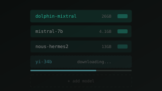
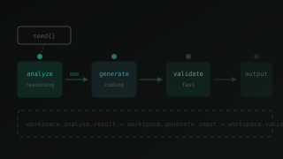
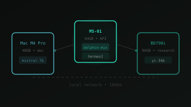

What the chat-led console should learn next
v2 ships the spine: seed → pin → convert → pivot → operate. This is the curated set of additions that deepen each rung — every one additive (no rework of the shell), every one stated as the user story it serves, every one placed in the surface it belongs to. One thousand no's came first; this is what survived.

Starting a conversation should cost one keystroke
Start a seeded chat from anywhere, in one line. Type "qwen + xsiam-docs: map these fields" — the palette parses model, context and first message; Enter lands you in a live thread.
Type-ahead spans every entity (models, agents, contexts, workflows, threads) — the same index that powers Library search. The omnibox is also the universal jump: g runs, open pr review loop.
Reseed a proven combination in one tap. Save role + model + context + skills as a named loadout ("triage kit"); the seed strip offers your top three.
A loadout is just a seed object — same SeedChips, same anatomy. Stored per project; shareable as YAML like everything else.
Know what a seed costs before sending. As you attach a model and context, the composer shows projected resident memory on the target box — "26 GB on bd790i · 61 GB free".
A single quiet mono line under the composer, warning amber only when the fit is tight. Operator-grade honesty, zero dashboard.
Treat model output as material, not text. Code, YAML and tables in replies render as blocks with copy / save-as-file / pin actions on the block itself.
Pinning a YAML block as a step carries the block in as the prompt contract — tighter than pinning the whole reply.

Turning a good conversation into a reusable object
Select messages → mint the object they imply. Multi-select replies, choose "distill" — the console drafts a system prompt, skill markdown, or context note from them, shows the draft for edit, then files it.
The chat→object moment made explicit. Lands in the install wizard at the configure phase, source pre-set to "from a thread ★" — the ladder again.
Never lose the prompt that worked. Every edit to an agent's system prompt is versioned; the peek panel's History tab shows a mono diff between any two versions, with one-tap revert.
Diffs render in the blueprint voice — JetBrains Mono, teal additions, ember removals. No separate review UI; it's a tab you already have.
Pin a question → answer pair as a standing check. Any exchange can be pinned as an expectation on the agent; future model swaps and prompt edits re-run it and show pass/drift.
Evals without an eval product: expectations live on the agent's card, re-checked quietly, surfaced as a FitBar-style drift row.
Collect findings into a context bundle while you read. In a research-seeded chat, every retrieved source gets "+ bundle"; a right-rail tray counts the bundle up and saves it as a named context object.
Already wireframed (flow 5). The tray reuses the structure rail's skeleton — same place, different payload, zero new layout.

Learning multi-agent before ever seeing a canvas
Bring a second brain into the thread mid-sentence. Type @red-teamer — the handoff renders as a visible baton-pass divider; replies after it carry that agent's identity.
This is the chain rung taught in place: a thread with two handoffs already is a 3-step pipeline, and convert scaffolds it as such. The divider is the future edge.
Same prompt, two or three models, side by side. From compare (or a thread), fork a message into parallel columns; pick a winner and it becomes the thread's model — or the step's.
Formalizes the "model bake-off" thread pattern. Columns reuse the compare grid; the winner CTA reuses "seed a chat with…".
Test every step against known-good data. Any step output or chat reply can be saved as a named fixture; every test bench offers the fixture list, not just "last run".
Fixtures are entities — same card, same peek, same Usage tab answering "which steps test against this?".

Making the canvas worth graduating to
The canvas and the file are the same thing. A collapsible right rail shows the workflow YAML, live-synced both directions; edits diff before applying.
Code is first-class in this brand — the rail makes "export YAML" obsolete because the YAML was never hidden.
Declare what flows between steps. Click an edge → state the expected shape ("NDJSON, keys: _time, xdm.event.id"). Runs validate at the boundary; violations glow ember on the exact edge.
Failures stop being "step 3 broke" and become "the contract between normalize and validate broke" — which is what actually happened.
Drag a file onto the canvas → it becomes the run input. The dry run starts against it immediately; the file is offered as a fixture afterwards.
The most direct possible answer to "how do I try this on my data". One gesture, no form.

Running a sovereign fleet without a dashboard farm
See the rack; place the models. A flyout shows each box (m4-pro · ms-01 · bd790i) with resident models, memory headroom and a live tok/s sparkline. Drag a model onto a box to load it there.
The sysstrip's CPU/MEM metrics become a door, not a decoration. Same Metric atoms, one level deeper.
Replay any run like a recording. A timeline scrubs through the run step by step — token streams, edge handoffs, the exact moment of failure — and "open source thread" is always one click away.
The step-trace drilldown v2 already has, given a time axis. Jump-to-failure is the headline gesture.
Run it when something happens, not when I remember. Attach a watcher to a workflow — "nightly", "on new file in /drop", "on webhook" — shown as a calm next-run chip on the workflow card.
Scheduling as a property of the workflow, not a separate scheduler app. The path's final rung ("schedule a run on the fleet") completes here.

The connective tissue
Every entity id, everywhere, is a door. Hover any mono id — in a chat reply, a run trace, a YAML rail, a wizard — and a mini EntityCard floats with status, fit and one action.
This is the unified card pattern paying compound interest: one component, one index, and suddenly the console has no dead text. The strongest single "connected experience" lever available.
Operate it like a terminal. j/k walks threads, ⌘Enter sends, g c / g l / g r jump tabs, p pins the focused reply, ? shows the map.
Cheap to add, defining to use — the audience lives in editors and shells. Pairs with the ⌘K omnibox as one input story.
Know a background run finished without being shouted at. The runs tab gets a pip, the favicon pulses once, the thread that owns the run shows a soft teal tick. No toasts, no notification center.
Motion stays a polish layer: one ds-pip-pulse, then stillness. Honest about limits — if it failed, the pip is ember and the run row says why.
- Notification center / toast stacks. Quiet signals cover it. An operator console interrupts for nothing.
- Cloud-style usage dashboards. Numbers appear where decisions happen (composer, fleet strip, run rows) — not on a vanity page.
- Gamified streaks or badges. The operator's path is the only progression surface, and it disappears when complete.
- Auto-playing onboarding tours. Next-best-action chips teach in context; nothing hijacks the pointer.
- Emoji reactions, avatars, presence. Single-operator sovereign appliance. The mono label is the personality.